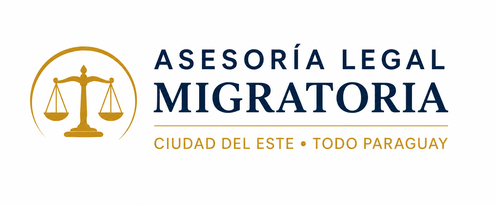

Regularize sua residência, cidadania e documentação com acompanhamento jurídico do início ao fim, em Ciudad del Este e em todo o Paraguai.
Agilidade • Transparência • Segurança Jurídica
Regularização rápida e segura para viver e trabalhar no Paraguai.
Obtenha sua identidade paraguaia com assessoria completa.
Processo de naturalização com acompanhamento especializado.
Suporte jurídico em todas as etapas do processo migratório.
Entendemos sua necessidade e avaliamos o melhor caminho para iniciar seu processo.
Orientamos e reunimos toda a documentação necessária para o protocolo.
Damos entrada e acompanhamos cada etapa do processo com total transparência.
Suporte completo até a aprovação final, com segurança e acompanhamento jurídico.
Meu compromisso é oferecer um atendimento humano, transparente e focado em resultados. Cada cliente recebe acompanhamento individual durante todo o processo migratório, desde a organização dos documentos até a conclusão da residência, cédula ou cidadania paraguaia.
Processos realizados
Em todo o Paraguai
Brasileiros atendidos
e atendimento online
"Excelente profissional. Transparparência total e acompanhamento em cada etapa da minha cidadania."
Mariana S."Agilidade impressionante. Em poucos meses estava com minha documentação regularizada no Paraguai."
Carlos A."Atendimento nota 10. A Dra. Delia é muito atenciosa e esclarece todas as dúvidas com clareza."
Juliana P.O prazo médio depende da demanda migratória e da documentação apresentada. Nossa equipe acompanha diariamente cada etapa para garantir máxima agilidade e segurança.
Não necessariamente. Após a análise do seu caso, orientamos a melhor estratégia para iniciar o processo.
Geralmente são necessários RG ou passaporte, certidões atualizadas e antecedentes criminais apostilados. A lista exata é fornecida após a avaliação do seu caso.
Sim. Atendemos clientes em Ciudad del Este, Assunção e em todo o território paraguaio.
Fale agora com nossa equipe e dê o primeiro passo para regularizar sua vida no Paraguai.
Solicitar atendimento pelo WhatsApp